Back
 Laravel
Laravel
 PHP
PHP
 HTML
HTML
 CSS
CSS
 Bootstrap
Bootstrap
 phpMyAdmin
phpMyAdmin
 Tailwind
Tailwind

About the system
G! Vote is a web-based digital voting system developed to modernize and streamline the election process at the University of Rizal System – Binangonan Campus by replacing the traditional manual voting method with a secure, efficient, and user-friendly digital platform. Designed specifically for student elections, G! Vote supports organization, party-list, tribunal, and classroom elections, allowing students to cast their votes online within the campus network while ensuring accuracy, transparency, and fairness throughout the entire electoral process.
Build With
LaravelPHPHTMLCSSBootstrapphpMyAdminTailwindPhotos
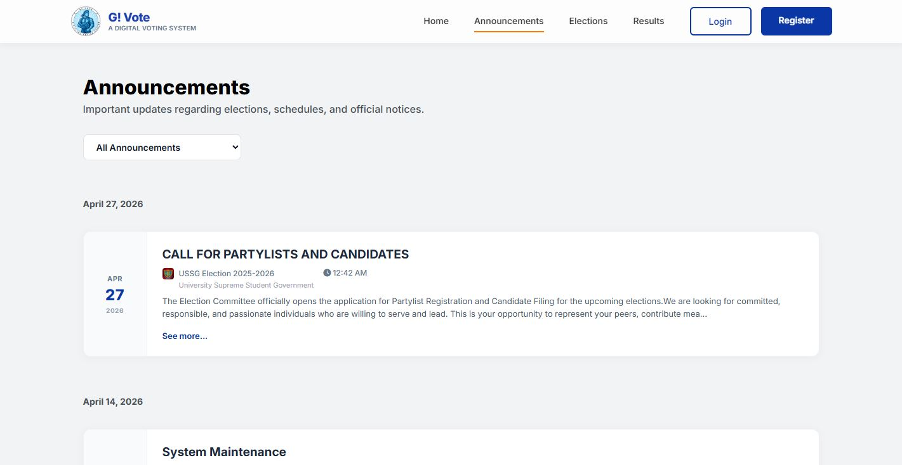
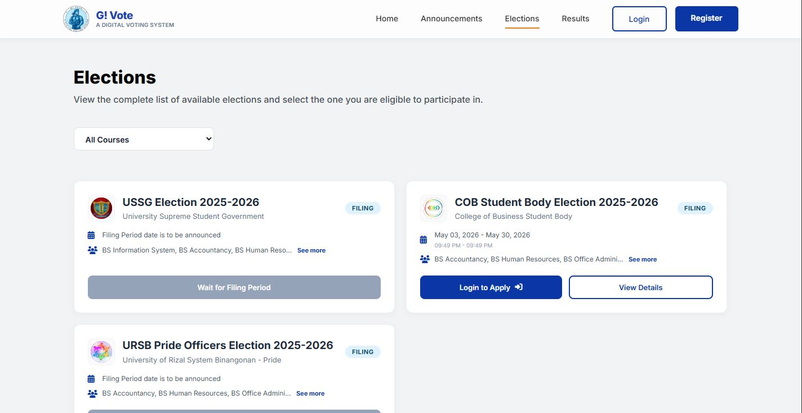
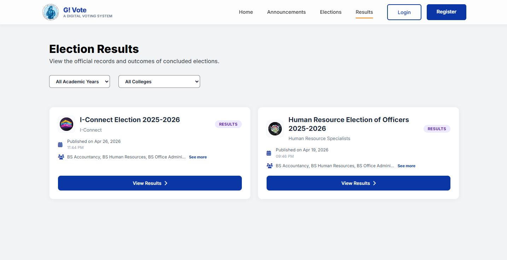
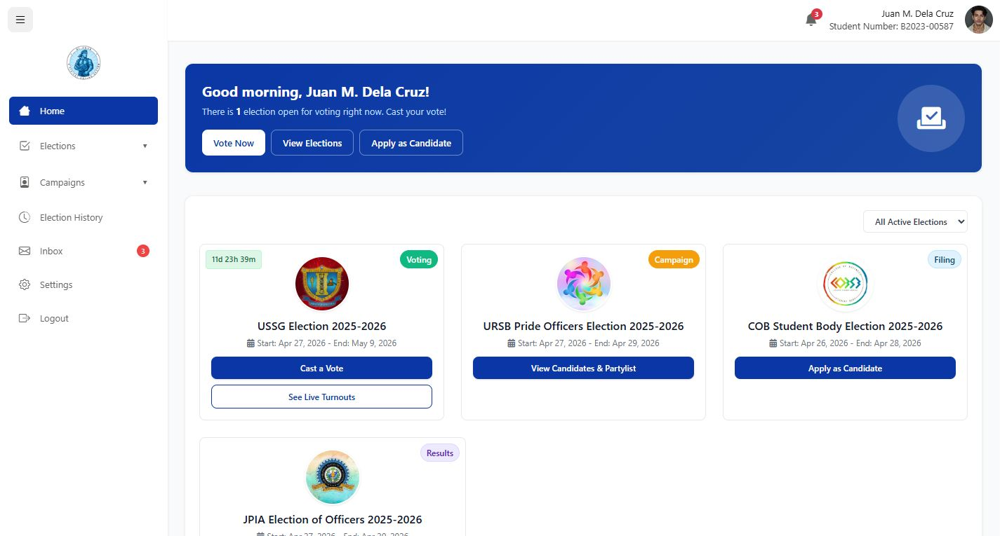
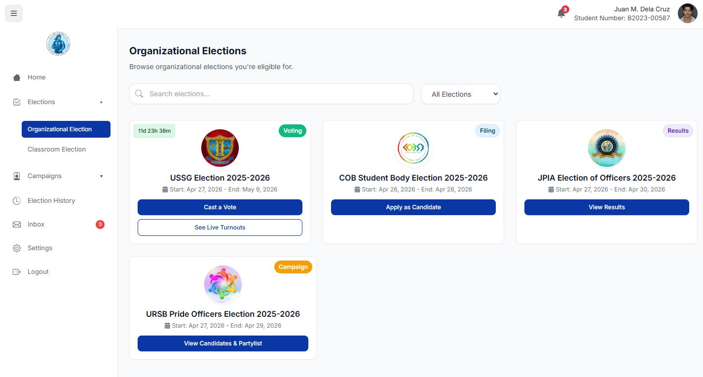
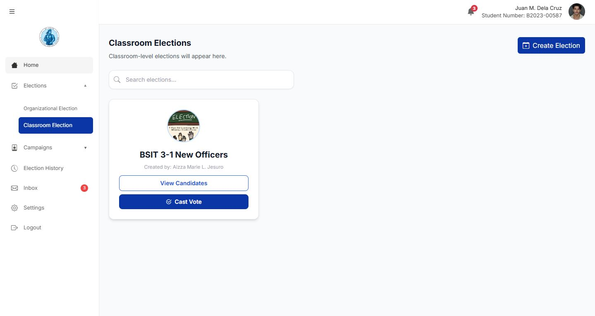
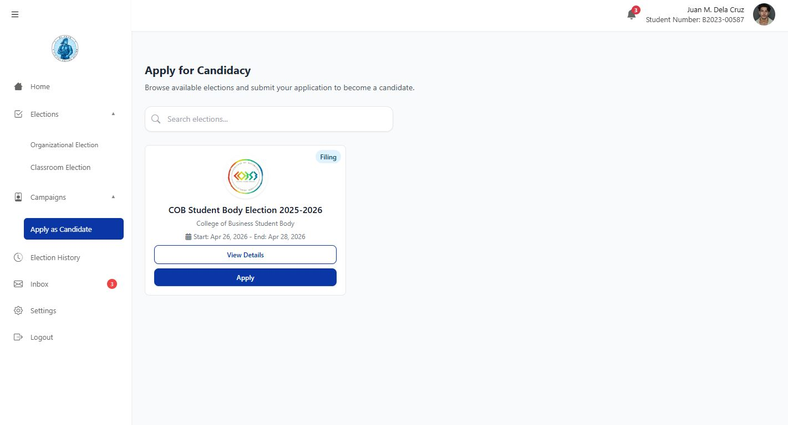
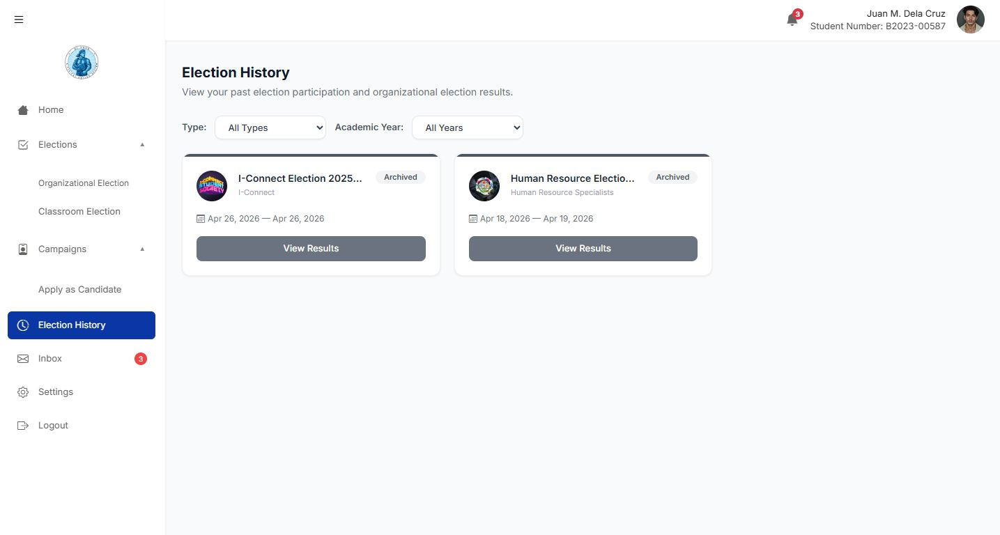
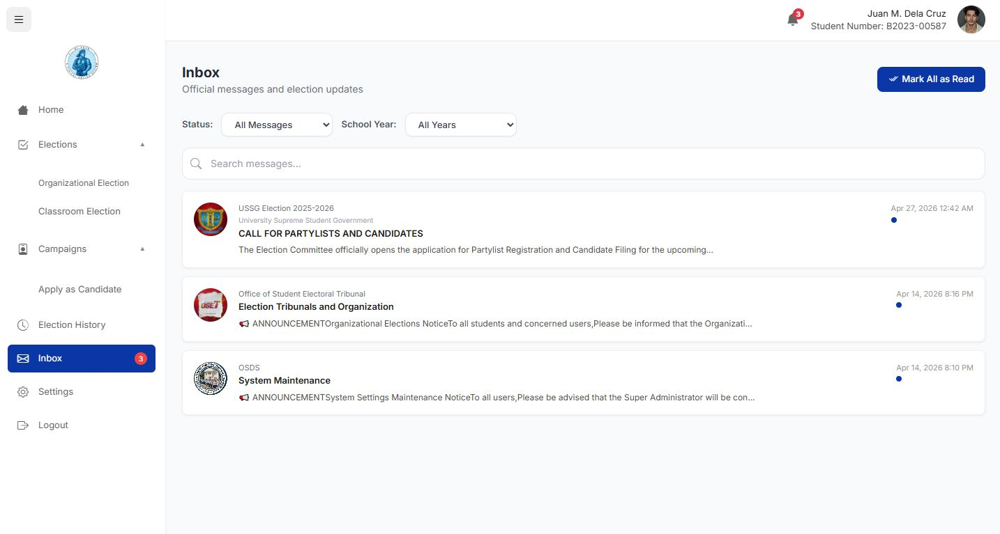
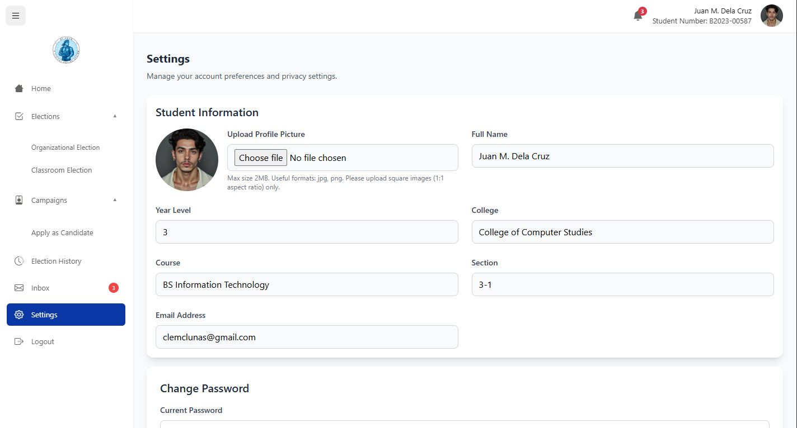
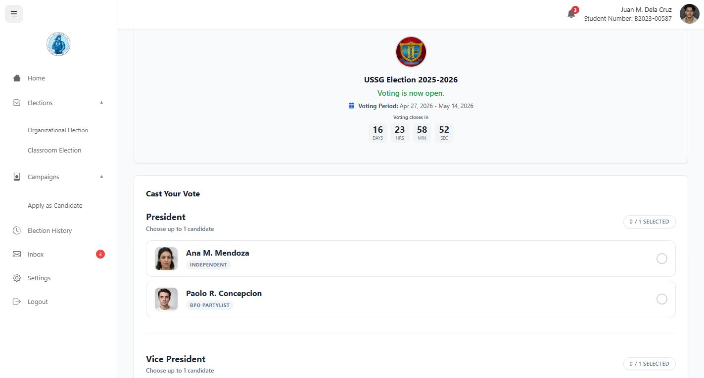
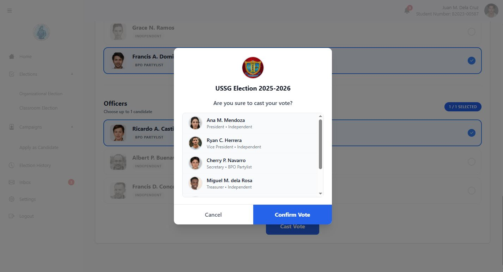
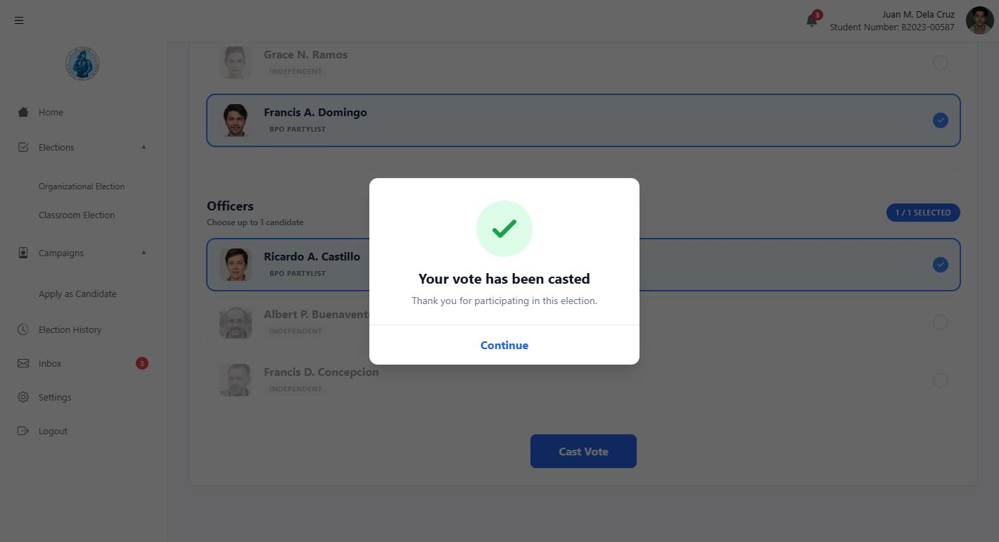
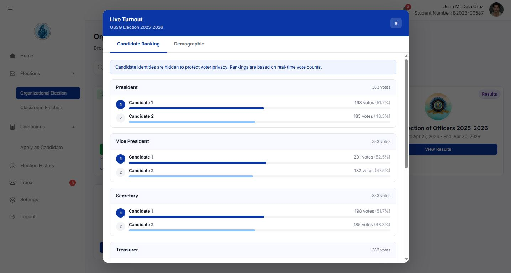
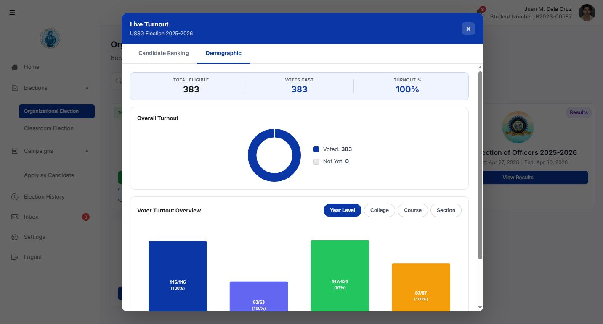